Al je antwoorden worden gewist en je begint opnieuw. Weet je het zeker?
Jouw resultaten
MWO1 · Oefentoets Klinisch redeneren
—
/ 40
0
Goed
0
Fout
0
Niet beantwoord
Vraag 1
Vraag 4 — Casus: het gewicht van kinderen. Een jeugdarts onderzoekt of kinderen tegenwoordig zwaarder zijn dan vroeger. Zij beschikt over twee grote steekproeven (n=10.000 elk, 1980 en 2005) uit de Nederlandse bevolking; allemaal jongens van 10–12 jaar. Gemiddeld gewicht 1980 = 40,3 kg, 2005 = 40,9 kg. Standaardafwijking 1980 = 10,1 kg, 2005 = 15,8 kg.
Vraag 4a. Beschrijf twee manieren om te onderzoeken of er een significant verschil is in gewicht tussen Nederlandse kinderen van 10–12 jaar in 1980 en die in 2005.
Modelantwoord
T-toets, of het betrouwbaarheidsinterval rondom het verschil. (Z-toets ook goed gerekend.)
1 punt per goede manier. (Leerdoel 4)
Vraag 2
Klinische Genetica — Vraag 7. SHOX-gerelateerde groeistoornis is een aandoening waarbij patiënten een kleine lengte met relatief korte bovenarmen hebben. Het SHOX-gen ligt op de pseudo-autosomale regio van het X- en Y-chromosoom; zowel mannen als vrouwen hebben dus twee keer het SHOX-gen. In de stamboom in figuur 1 zijn de aangedane familieleden weergegeven met een gearceerd symbool. Met "+" en "−" is aangegeven of de mutatie in het SHOX-gen is aangetoond.
Vraag 7a. Welk overervingspatroon is in de familie uit figuur 1 het meest waarschijnlijk?
Een onderzoeker doet een studie naar de risicofactoren voor een zeldzame kankersoort. Voor deze studie worden patiënten van de afdeling oncologie geïncludeerd. De controles worden geworven via een advertentie.
Vraag 2a. Welk type bias kan hier optreden?
Modelantwoord
Selectiebias.
2 punten. Leerdoel 1.
Vraag 4
CASUS - COELIAKIE. Coeliakie is een chronische inflammatoire aandoening van de dunne darm die veroorzaakt wordt door een permanente intolerantie voor gluten in voedsel. Patiënten met coeliakie krijgen een glutenvrij dieet voorgeschreven. Hoewel de meeste patiënten goed reageren op een dergelijk dieet, is er een kleine groep met gecompliceerde coeliakie, waarbij de ziekte verergert. Deze patiënten hebben een verhoogd risico op T-cel lymfoom, een agressief tumortype met een zeer slechte prognose. Als men gecompliceerde coeliakie vroegtijdig diagnosticeert, is behandeling mogelijk. Daarom is vroegtijdige identificatie van groot belang. Op dit moment kan dit alleen maar via invasieve technieken. Men is echter op zoek naar markers in het bloed die op aanwezigheid van gecompliceerde coeliakie wijzen. In een onderzoek zijn bij patiënten die goed reageren op een glutenvrij dieet en bij patiënten met gecompliceerde coeliakie de volgende vijf serologische markers getest: IL-6, IL-8, sCD25, granzyme-B en sMICA. Bekijk Output 3.
Vraag 5a. Ervan uitgaande dat de analyses in de output correct zijn: voor welke markers is er een statistisch significant verschil tussen de groep patiënten die goed reageert op een glutenvrij dieet en de groep patiënten met gecompliceerde coeliakie? Licht het antwoord toe.
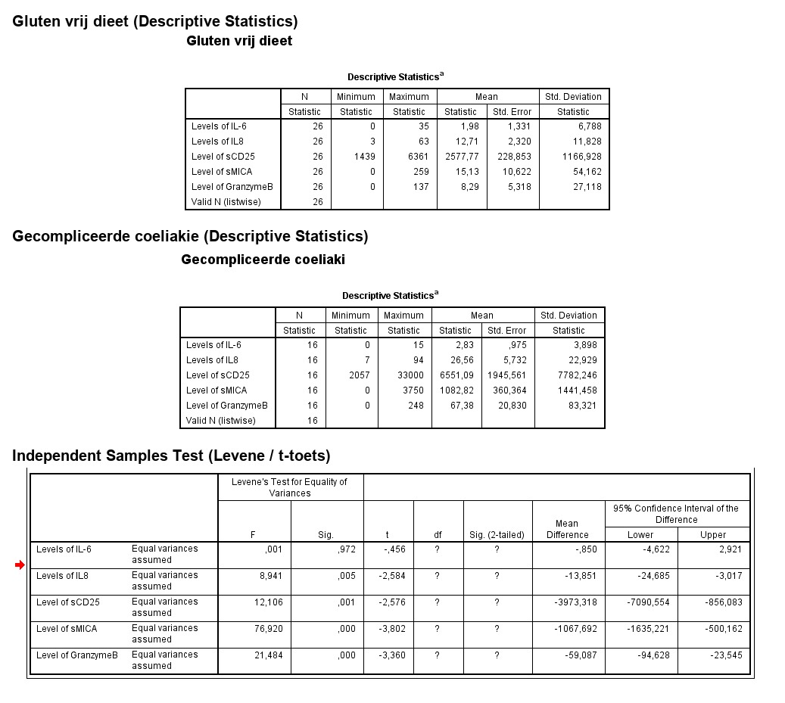
Modelantwoord
IL-8, sCD25, sMICA, GranzymeB — de 95%-betrouwbaarheidsintervallen van het verschil bevatten de 0 niet.
1 punt voor 4 goede markers; 1 punt voor motivatie; totaal 2 punten. Leerdoel 4.
Vraag 5
Casus: Darmkanker. Een grote groep mannen (N=7000) tussen de 50 en 70 jaar wordt gedurende 5 jaar gevolgd. Het alcoholgebruik en het rookgedrag worden aan het begin van de periode vastgelegd onder de aanname dat dit niet meer verandert in de daarop volgende jaren. 2000 van deze mannen bleken dagelijks 3 of meer alcoholische eenheden te drinken en werden daarom geclassificeerd als 'royale drinkers'. De overige mannen dronken minder en werden geclassificeerd als 'matige drinkers'. De helft van de mannen in beide groepen drinkers rookte. In totaal kregen 120 mannen in die periode darmkanker (NB niemand had darmkanker aan het begin). De helft daarvan was een 'royale drinker', de andere helft een 'matige drinker'.
Vraag 6a. Wat is de cumulatieve incidentie van darmkanker over 5 jaar?
Modelantwoord
120 / 7000 = 0,0171 = 1,71% over 5 jaar.
1 punt voor de berekening; 1 punt voor correcte antwoord '0,0171' of 1,71%. Leerdoel 5.
Vraag 6
Casus: Amerikaans volksgezondheidsonderzoek. Voor een onderzoek naar de volksgezondheid in Amerika wordt een aselecte steekproef getrokken van 5604 Amerikanen van 20 t/m 79 jaar. Bij 2628 mensen is het onderzoek in de zomer verricht en bij 2976 mensen in de winter.
Group Statistics
Seizoen
N
Mean
Std. Deviation
Std. Error Mean
winter
2628
82,6490
21,83047
0,42584
zomer
2976
82,3324
21,44281
0,39307
Vraag 4a. Een onderzoeker vermoedt dat het seizoen het lichaamsgewicht van Amerikanen (in kg) beïnvloedt en verkrijgt onderstaande output. Welke statistische toets kan gebruikt worden om het verschil tussen winter en zomer te toetsen?
Modelantwoord
Onafhankelijke (independent samples) t-toets.
2 punten; voor alleen “t-toets” 1 punt. (Leerdoel 4)
Vraag 7
Casus: HPV en baarmoederhalskanker — vraag 9 t/m 11. Bepaalde typen van het humane papillomavirus (HPV) zijn de hoofdoorzaak van baarmoederhalskanker. In 2003 verscheen een publicatie (N Engl J Med 348;6) met resultaten van een studie naar verschillen in risico op baarmoederhalskanker per HPV-type, gebaseerd op gepoolde data van 11 case-controlestudies uit negen landen. In totaal waren data van 2648 vrouwen beschikbaar: 1356 met baarmoederhalskanker en 1292 controles (zonder baarmoederhalskanker). Van de vrouwen met baarmoederhalskanker bleken er 1310 besmet met HPV, terwijl dit er bij de controles maar 210 waren.
Vraag 9. Wat is de prevalentie van HPV in de gehele onderzoekspopulatie? Geef de berekening.
Modelantwoord
(1310 + 210) / 2648 = 0,57
Totaal 2 punten; 1 punt voor correcte berekening. (Leerdoel 5)
Vraag 8
Klinische genetica — vraag 15 t/m 22. Gemiddeld is bij twee willekeurige personen 99,9% van het DNA identiek. De overige 0,1% is variabel; dit zijn de zogenaamde Single Nucleotide Polymorphisms (SNPs).
Vraag 15. Verreweg de meeste SNPs hebben geen effect op het fenotype. Leg uit waarom dit zo is.
Modelantwoord
Slechts 1,2% van het genoom bestaat uit de exonen die voor de eiwitten coderen. Als SNPs random verdeeld zijn in het genoom, ligt meer dan 98% buiten de exonen en zal deze variatie niet in de aminozuurvolgorde van de eiwitten terug te vinden zijn.
(Het antwoord "omdat de meeste SNPs silent mutations zijn" of "omdat veel genen een recessief beeld geven" is onjuist.)
2 punten. (Leerdoel 6)
Vraag 9
Casus: spinale musculaire atrofie (SMA). SMA is een zeldzame spierziekte die voorkomt bij kinderen en bij volwassenen, waarbij de spieren geleidelijk dunner en zwakker worden, minder bewegen en minder kracht hebben. Deze patiënten krijgen vaak fysiotherapie. Een fysiotherapeut wil graag het functioneren van zijn patiënten op een systematische manier gaan meten om het beloop van de ziekte met zijn patiënten te kunnen bespreken. Voor dit doel is hij op zoek naar een goed meetinstrument.
Welke drie klinimetrische eigenschappen zijn voor het gebruik van meetinstrumenten in de fysiotherapie praktijk het meest relevant?
Meerdere antwoorden mogelijk.
Vraag 10
Vervolg casus: kwetsbaarheid bij ouderen. Zie figuur 1 (histogram van de frailty index score).
Afgaande op figuur 1, welke samenvattende maat verdient de voorkeur voor het samenvatten van de frailty index score?
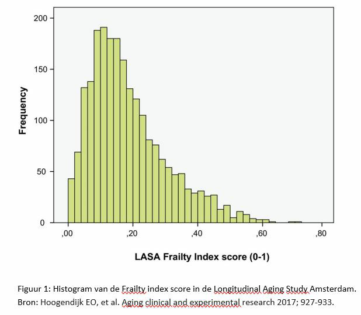
Vraag 11
Casus: voetbal. Bij AJAX wordt onderzoek gedaan om het aantal blessures bij jeugdspelers te verminderen. Hiervoor wordt gebruik gemaakt van speciale krachttraining. Alle jeugdspelers worden aan deze nieuwe manier van krachttraining blootgesteld en gedurende het seizoen werden de blessuregevallen geregistreerd. De groep jeugdspelers werd onderverdeeld in de onderbouw (t/m 14 jaar) en de bovenbouw (vanaf 15 jaar). In totaal deden er in de onderbouw 140 jeugdspelers mee en in de bovenbouw 100. In beide groepen raakten 15 spelers geblesseerd.
Vraag 18. Wat is de cumulatieve incidentie van blessures in de totale groep jeugdspelers? Geef de berekening.
Modelantwoord
(15 + 15) / (140 + 100) = 30/240 = 0,13
Totaal 2 punten.
Vraag 12
Casus: stamboom. Het voorkomen van een aandoening wordt in deze stamboom weergegeven door een gevuld symbool.
Vraag 27. Wat is de meest waarschijnlijke overervingsvorm in deze familie? Geef twee argumenten.
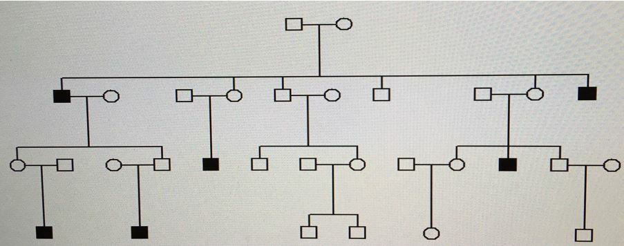
Modelantwoord
Autosomaal dominant (1 punt). Dominant zonder "autosomaal": ½ punt; multifactorieel: ½ punt. Eventueel is pseudoautosomaal dominant ook juist (1 punt).
Argumenten (1 punt per argument): meerdere generaties aangedaan; overdracht van man op man (daarom is X-gebonden onjuist) en overdracht van vrouw op man (daarom is Y-gebonden onjuist).
Indien multifactorieel geantwoord — juist argument: veel mensen aangedaan in de familie (½ punt), veelvoorkomende aandoening die met name bij mannen tot uiting komt (1 punt).
Totaal 3 punten: overervingsvorm + twee argumenten.
Vraag 13
Casus: behandeling van longkanker. Longkanker is een ziekte met een slechte prognose. Als een patiënt uitgezaaide longkanker heeft, is de levensverwachting minder dan een half jaar. De standaardbehandeling is chemotherapie. Sinds enkele jaren is er echter een nieuwe (en zeer dure) behandeling mogelijk: immunotherapie met het middel Ipilimumab. Studies laten zien dat ongeveer 20% van de patiënten veel baat heeft bij het middel en substantieel langer leeft, soms nog jaren. Voor de overige 80% is de behandeling zinloos en zelfs nadelig door de soms ernstige bijwerkingen. Onderzoekers vergeleken in een gerandomiseerd onderzoek de 6 maands-overleving van 100 patiënten behandeld met Ipilimumab met die van 100 patiënten die standaard zorg kregen. Hieronder de resultaten:
Dood op 6 mnd
In leven op 6 mnd
Ipilimumab
81
19
standaard zorg
92
8
Totaal
173
27
Vraag 6. Wat is in dit onderzoek na 6 maanden de cumulatieve incidentie op dood zijn? Geef de berekening.
Modelantwoord
(173/200)*100% = 86,50%.
De proportie (0,865) wordt ook goed gerekend.
Totaal 2 punten.
Vraag 14
Casus: interventie. In een interventieonderzoek wordt onderzocht of vitamine D tot een verbetering in spierkracht leidt. De uitkomst is verbetering in spierkracht (ja/nee). In de interventiegroep zitten 100 patiënten en in de controlegroep 60 patiënten. In de interventiegroep verbetert 50% en in de controlegroep 25%.
Vraag 9. Wat is het relatieve risico op verbetering in de interventiegroep ten opzichte van de controlegroep? Geef de berekening.
Modelantwoord
(50/100)/(15/60) = 2
Totaal 2 punten.
Vraag 15
Casus: cognitief functioneren. In een onderzoek naar leefstijl en het cognitief functioneren van ouderen werd bij 1417 ouderen de Mini Mental State Examination (MMSE) afgenomen. De MMSE resulteert in een score tussen 0 en 30, waarbij een hogere score een betere cognitieve vaardigheid indiceert. De gemiddelde MMSE was 25,1 met een standaarddeviatie van 2,6. De mediaan was 28,6. De laagst geobserveerde MMSE was 5 en de hoogste 30. Als leefstijlvariabelen werden roken, alcoholgebruik en gewicht gemeten.
Welke conclusie is correct?
Vraag 16
Vervolg casus: cognitief functioneren. De onderzoekers vinden dat de relatie tussen leefstijl en cognitief functioneren verschilt tussen mensen met en zonder hart- en vaatziekten.
Hoe kunnen de onderzoekers in de analyse het beste rekening houden met het feit dat de relatie tussen leefstijl en cognitief functioneren verschilt tussen mensen met en zonder hart- en vaatziekten?
Vraag 17
Vervolg casus: voetbal.
Reaction time
Sport
N
Mean
Std. Deviation
voetbal
45
629,2889
64,57400
anders
93
622,6237
56,68485
Vraag 23. Bereken de effectmaat voor de reactietijd van voetballers t.o.v. andere sporters.
Modelantwoord
629,2889 − 622,6237 = 6,67
Totaal 1 punt.
Vraag 18
Klinische genetica.
Variant (mutatie) c.508G>C, p.(Ala170Pro) is een voorbeeld van:
Vraag 19
CASUS: HYPERTENSIE EN HART- EN VAATZIEKTEN (vervolg) Hypertensie is gedefinieerd als systolische bloeddruk ≥ 140 mmHg en/of diastolische bloeddruk ≥ 90 mmHg; anders géén hypertensie.
Wat is het meetniveau van hypertensie?
Vraag 20
CASUS: FYSIEKE ACTIVITEIT (vervolg) Figuur 1 toont een box-and-whisker plot van totale fysieke activiteit (sterk rechtsscheef).
Stel, de onderzoeker wil analyseren of mannen en vrouwen verschillen in hun totale fysieke activiteit. Hoe kan de onderzoeker in dit geval fysieke activiteit het beste meenemen in de analyses uitgaande van figuur 1?
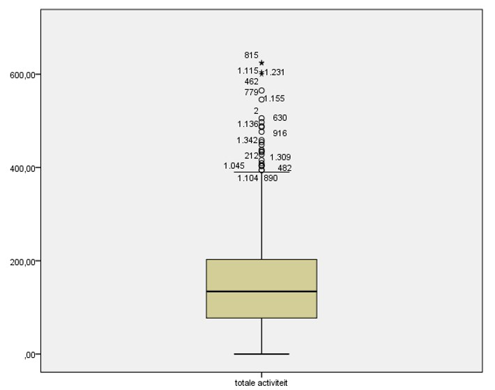
Vraag 21
CASUS Het voorkomen van een zeldzame aandoening wordt in de onderstaande stamboom weergegeven door een gevuld symbool.
Wat is de meest waarschijnlijke overervingsvorm in deze familie? Leg uit hoe je het voorkomen van de aandoening in deze stamboom kunt verklaren. Gebruik daarbij maximaal 30 woorden.
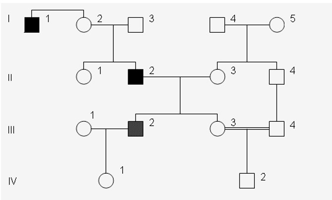
Modelantwoord
Overervingsvorm: autosomaal dominant met verminderde penetrantie (pseudoautosomaal dominant wordt ook goed gerekend). Uitleg: er is sprake van verminderde penetrantie (I-2 is niet aangedaan maar wel obligaat drager), óf de aandoening komt alleen bij mannen tot uiting (bijv. mannelijke subfertiliteit of testiscarcinoom). Het is een zeldzame aandoening dus multifactorieel/autosomaal recessief is minder waarschijnlijk; X-gebonden kan niet vanwege man-op-man-overdracht. Variabele expressie en imprinting zijn niet juist.
Deel 1 (overervingsvorm, 2 punten): autosomaal dominant met verminderde penetrantie (of pseudoautosomaal dominant). Alleen autosomaal dominant = 1 punt; multifactorieel = 0,5 punt. Deel 2 (uitleg stamboom, 1 punt): verminderde penetrantie of alleen-bij-mannen; deelpunten voor zeldzaam-argument en man-op-man-argument.
Vraag 22
Casus: longfunctie. In figuur 1 is de verdeling van longfunctie gegeven, zoals gemeten met een peak flow meter. Hierbij is de maximumscore van drie metingen genomen.
Met welke twee methodes kun je, op basis van de informatie in figuur 1, vaststellen of longfunctie normaal verdeeld is?
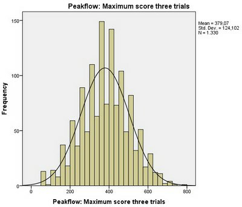
Modelantwoord
Eye ball-test van het histogram.
Indien alleen positieve waarden mogelijk zijn: kijk of je 2x de standaarddeviatie van het gemiddelde kunt aftrekken.
Totaal 2 punten; 1 punt per methode.
Vraag 23
Casus: diabetes en hart- en vaatziekten — vervolg.
Is geslacht een effectmodificator, een confounder of geen van beiden in de associatie tussen diabetes en hart- en vaatziekten? Leg uit hoe je tot dit antwoord gekomen bent.
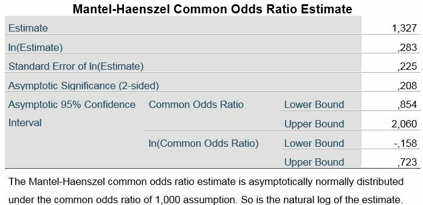
Modelantwoord
Geen van beiden.
Stap 1: De ruwe OR = 1,247.
Stap 2/3: Stratificeren op geslacht levert de volgende odds ratio's en betrouwbaarheidsintervallen op: mannen: OR = 1,472 (95% BI: 0,777 – 2,790); vrouwen: OR = 1,207 (95% BI: 0,655 – 2,223). De stratumspecifieke effectmaat van mannen valt binnen het betrouwbaarheidsinterval van de vrouwen en vice versa. Conclusie: geslacht is geen significante effectmodificator.
Stap 4: De Mantel-Haenszel gepoolde OR is 1,327. Deze wijkt minder dan 10% af van de ruwe effectmaat: ((1,327-1,247)/1,247)×100% = 6,42%. Conclusie: geslacht is geen confounder.
Totaal 3 punten: 1 punt indien stap 2/3 beschreven wordt; 1 punt indien stap 4 beschreven wordt; 1 punt voor de juiste conclusie.
Vraag 24
Casus — vervolg.
Stel dat meneer vertelt dat hij erachter is gekomen dat zijn neef (de zoon van zijn moeders broer) SMA had. Wat is de kans op een aangedaan kind nu?
Modelantwoord
De kans op dragerschap voor meneer is nu 1/4. De kans op een aangedaan kind is derhalve 1 × 1/4 × 1/4 = 1/16 (ook juist: 6,25%).
NB: Ook juist wanneer het populatierisico op dragerschap vanuit de andere ouder erbij wordt opgeteld.
Totaal 1 punt bij correct antwoord.
Vraag 25
Casus. Het voorkomen van een zeldzame aandoening wordt in deze stamboom weergegeven door een gevuld symbool.
Welke overervingsvorm verklaart meest waarschijnlijk deze stamboom? Leg uit hoe je het voorkomen van deze aandoening in deze stamboom kunt verklaren. Beschrijf zo volledig mogelijk, gebruik daarbij maximaal 30 woorden.
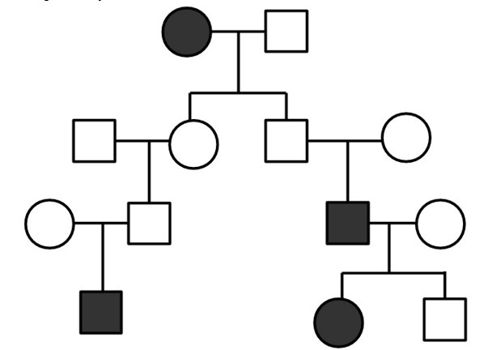
Modelantwoord
Autosomaal dominant met maternale imprinting.
Uitleg stamboom: er is sprake van maternale imprinting (alleen kinderen van een vader die de aanleg draagt krijgen de aandoening; wanneer de aanleg wordt geërfd van de moeder komt de aandoening niet tot uiting).
Totaal 2 punten. 2 punten voor: autosomaal dominant met maternale imprinting; 1,5 punt voor: autosomaal dominant met imprinting; 1 punt voor: autosomaal dominant met paternale imprinting of met verminderde penetrantie; 0,5 punt voor: autosomaal dominant of multifactorieel; 0 punten voor: variabele expressie.
Vraag 26
Wat is de relatie tussen klinimetrie en value-based health care?
Vraag 27
CASUS: LICHAAMSBOUW (vervolg 1) Figuur 1 toont een stem-and-leaf plot van vetpercentage.
Afgaande op figuur 1, hoe kan vetpercentage het beste meegenomen worden in de analyse van de onderzoeker?
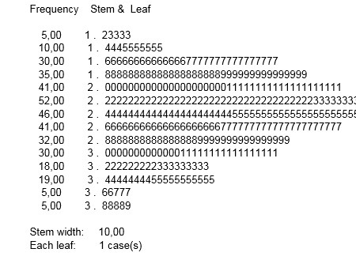
Vraag 28
Casus – Diagnostiek blaasontsteking Een huisarts wil door middel van een korte vragenlijst bepalen of iemand een blaasontsteking heeft. Hij wil kijken of de vragenlijst de plaats in kan nemen van het urineonderzoek, dat hij als gouden standaard beschouwt. De vragenlijst is 'positief' als alle 3 vragen positief beantwoord worden. In een aantal maanden wordt de lijst voorgelegd aan 75 personen met een bewezen blaasontsteking (urineonderzoek 'positief') en 85 personen bij wie het urineonderzoek 'negatief' was. Bij de helft van de patiënten bleek de vragenlijst 'positief'. Van alle personen met een 'negatieve' vragenlijst bleek 19% volgens het urineonderzoek toch een blaasontsteking te hebben.
Geef de 2 × 2 tabel waarin de resultaten van de vragenlijst en het urineonderzoek tegen elkaar zijn uitgezet.
Modelantwoord
Urineonderzoek+ Urineonderzoek− totaal
Vragenlijst + 60 20 80
Vragenlijst − 15 65 80
totaal 75 85 160
NB: Dit betreft de meest ideale opzet van de kruistabel, maar er zijn ook andere opties mogelijk.
Casus Stamboom Het voorkomen van een zeldzame aandoening wordt in deze stamboom weergegeven door een gevuld symbool. Onder het symbool staat de leeftijd (in jaren) aangegeven waarop de verschijnselen begonnen.
Welke overervingsvorm verklaart meest waarschijnlijk deze stamboom? Leg uit hoe je het voorkomen van deze aandoening in deze stamboom kunt verklaren. Beschrijf zo volledig mogelijk, gebruik daarbij maximaal 25 woorden.
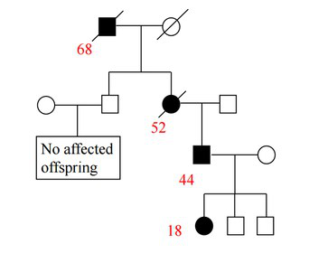
Modelantwoord
Autosomaal dominant met anticipatie. De aandoening komt in elke generatie voor (verticale overerving, autosomaal dominant) en de beginleeftijd van de verschijnselen daalt per generatie (68 → 52 → 44 → 18 jaar), wat wijst op anticipatie.
Totaal 2 punten bij autosomaal dominant met anticipatie. Alleen autosomaal dominant: 1 punt. Alleen anticipatie: 1 punt. Autosomaal dominant met wisselende expressie: 1 punt.
Vraag 30
Voor het meten van fysiek functioneren kun je een PRO of een PerfO measure gebruiken. Wat is het belangrijkste verschil tussen een PRO en een PerfO?
Vraag 31
Casus: fysieke activiteit bij kinderen. Een onderzoeker is geïnteresseerd in het effect van een interventie gericht op het bevorderen van fysieke activiteit op het voorkomen van overgewicht bij kinderen, specifiek op de som van vier huidplooien. Figuur 1 toont een histogram van de som van vier huidplooien.
Afgaande op figuur 1, welke samenvattende maat verdient de voorkeur voor het samenvatten van de som van vier huidplooien?
Is het verschil in lichaamsgewicht tussen diegenen die 's zomers en 's winters gemeten zijn statistisch significant? Gebruik de gegeven tabellen om de p-waarde op te zoeken en te motiveren waarom het verschil wel of niet significant is. (Als je het vorige antwoord niet wist, ga uit van 1000 vrijheidsgraden.)
Modelantwoord
Nee, het verschil is niet significant. In tabel A3 is te zien dat de p-waarde groter is dan 0,2. Deze is groter dan 0,05 en dus niet significant.
1 punt voor 'niet significant' en 1 punt voor de motivatie.
Vraag 33
Casus: dikke darmkanker screening – vervolg.
FIT+
FIT-
totaal
≥3 AA
98
102
200
<3 AA
42
158
200
Totaal
140
260
400
Wat is de meest geschikte associatiemaat (ofwel effectmaat) om de relatie tussen het aantal adenomen en FIT positiviteit te bestuderen? Leg uit waarom.
Modelantwoord
De odds ratio. De studie is een cross-sectioneel (cohort) onderzoek, dus een relatief risico of risicoverschil is hier niet geschikt.
1 punt voor odds ratio en 1 punt voor uitleg.
Vraag 34
Casus. Een twee jarige jongen komt op het spreekuur van het "handenteam" (zie zijn rechterhand op de afbeelding). Tijdens de zwangerschap waren er echografisch amnionstrengen gezien.
Er is bij deze jongen meest waarschijnlijk sprake van een:
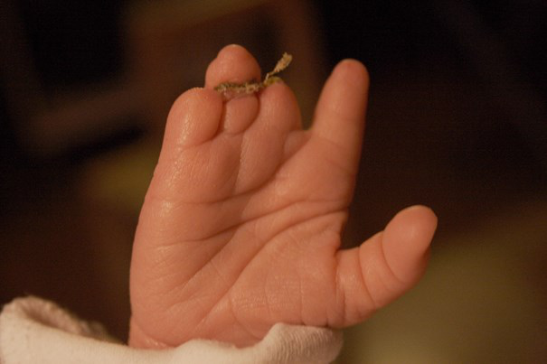
Vraag 35
CASUS: NIEUW MEDICIJN – vervolg.
Placebo
Nieuw medicijn
Overleden
15
5
Niet overleden
185
195
200
200
Wat is de relatieve risicoreductie? Geef de berekening.
1 punt voor berekening en 1 punt voor juiste antwoord.
Vraag 36
CASUS: STAMBOOM – vervolg 1.
Autosomaal dominante overerving met imprinting.
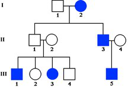
Modelantwoord
Nee. Zowel het nageslacht van mannen als van vrouwen is aangedaan; dit sluit imprinting uit.
2 punten (1 voor mogelijk en 1 voor argument). Leerdoel 7, Knows how.
Vraag 37
Casus: vragenlijst diabetesproblemen.
DIABETESPROBLEMEN — Instructies: Welke van de volgende diabetesonderwerpen zijn op dit moment een probleem voor u? Omcirkel het cijfer dat het beste uw antwoord weergeeft.
Geen concrete en heldere doelen hebben voor uw diabetesbehandeling?
U ontmoedigd voelen over de wijze waarop uw diabetes behandeld wordt?
Onaangename sociale situaties met betrekking tot de zorg voor uw diabetes (bv. anderen vertellen u wat u moet eten)?
Niet weten of uw stemming of gevoelens met de hoogte van uw bloedglucose samenhangen?
Ontevreden zijn met de arts die uw diabetes behandelt?
Bij elke vraag kan de patiënt kiezen uit de volgende antwoordopties: Geen probleem, Klein probleem, Redelijk probleem, Behoorlijk probleem, Ernstig probleem.
Wat is het meetniveau van de antwoordopties “Geen probleem, Klein probleem, Redelijk probleem, Behoorlijk probleem, Ernstig probleem” in bovenstaande vragenlijst?
Vraag 38
Casus: landelijke campagne overgewicht bij kinderen. Bij de GGD Amsterdam werd een prospectief onderzoek uitgevoerd waarbij gekeken werd naar het effect van een nieuwe landelijke campagne om het gewicht van kinderen te verlagen. Hiervoor werd de BMI gemeten bij een groot aantal kinderen vóór de campagne en bij dezelfde kinderen na de campagne. Onderstaande figuur geeft de verdeling van de BMI-waardes bij de meting vóór de campagne.
39
(De frequenties van de stammen 14 t/m 19: 1 + 2 + 2 + 9 + 7 + 18 = 39.)
Vraag 39
Casus: kwaliteit van leven. In een onderzoek naar de relatie tussen alcoholgebruik (geen alcohol versus wel alcohol) en kwaliteit van leven werd bovenstaand resultaat gevonden. Collega-onderzoekers dachten dat sekse een mogelijke confounder was in deze relatie en gaven aan dat er gecorrigeerd moet worden voor sekse. Onderstaande 2x2-tabel toont de sekseverdeling over de alcoholgroepen.
Kan sekse een confounder zijn in de relatie tussen alcoholgebruik en kwaliteit van leven?